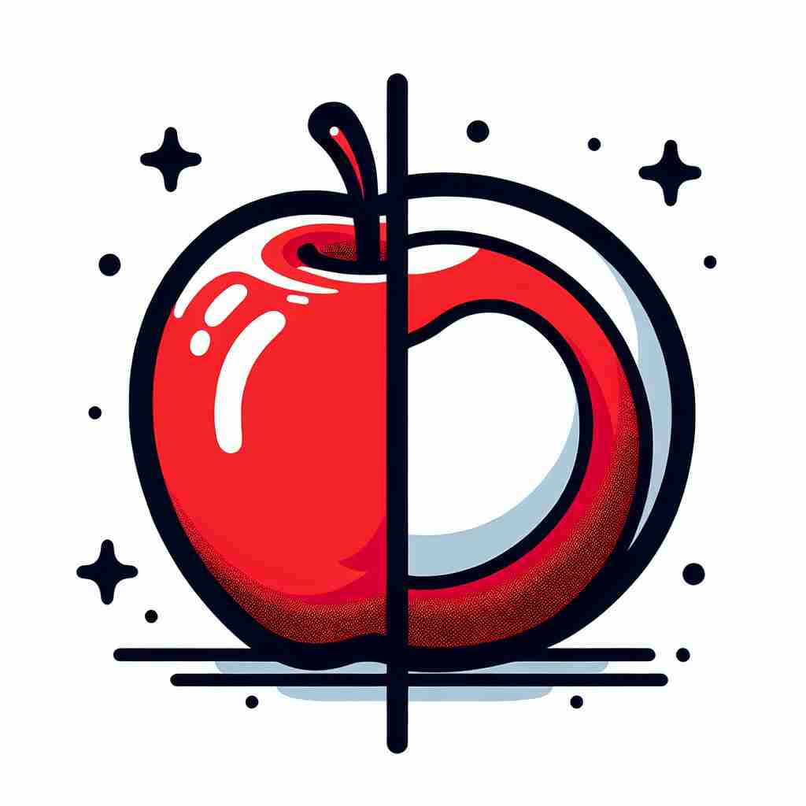

💬 The artist notes the similarity between apples while drawing. 艺术家在绘画时注意到苹果之间的相似性。

💬 There is a similarity between apples in color and shape. 苹果在颜色和形状上有相似之处。
💬 The similarity of the trees shows how seasons change colors. 树木的相似性显示了季节如何改变色彩。
💬 The artist notes the similarity between apples while drawing. 艺术家在绘画时注意到苹果之间的相似性。
💬 There is a similarity between apples in color and shape. 苹果在颜色和形状上有相似之处。
💬 The similarity of the trees shows how seasons change colors. 树木的相似性显示了季节如何改变色彩。
🧠 想象'similarity'是一面镜子，反映出事物之间的相似之处。无论是整体相似、具体相似点、相似的事物本身，还是用作比喻，都源于这个核心概念。记住这个'相似镜'的意象，可以帮助你更好地理解和运用'similarity'的各种含义。
🔈 [sɪmə'lærətɪ]
🗝️ n. the quality of being alike or resembling something else 相似或像某物的特质
🎭 在一个艺术工作坊里，老师指导学生观察两幅画。虽然它们来自不同的画家，但都使用了相似的色调和构图。老师指出这种'alike的质量，即相似性，让学生更好地理解艺术风格。
💬 There is a striking similarity between the two paintings. 这两幅画之间有显著的相似之处。
🌳 由基本词 'similar'（相似的）加上名词后缀 '-ity' 组成，形容词变为名词，表示 '相似性，相似点'。
💡 记忆 'similarity' 可以联想 'similar' 和 '-ity' 的组合，想到 '相似的性质或状态'，即为 '相似性'。通过将 '相似' 和名词化的概念联系起来，更容易理解其含义。
🗝️ n. a feature or quality that two or more things have in common 共同特征或特性
🎭 在一个科学课上，老师展示了鸽子和乌鸦的翅膀模型，问学生观察它们的共同特征。学生们注意到它们的翅膀结构中有许多相似之处，从而理解了两者共同的特性。
💬 We noted several similarities in their research methods. 我们注意到他们的研究方法中有几个相似之处。
🤔 从整体相似延伸到具体相似点
🗝️ n. a thing that is like or resembles another 类似于其他事物的东西
🎭 在一个繁华的超市里，一个顾客在选择两种品牌的果汁。她仔细比较它们的包装，发现两者在设计上有许多相似之处，就如同行走在同一条道路上的两个产品。
💬 The similarity of their facial features suggested they were related. 他们面部特征的相似性表明他们是有血缘关系的。
🤔 从抽象概念具体化为相似的事物
🗝️ n. the state or fact of being similar 相似的状态或事实
🎭 在一个图书馆的研讨会中，书籍分类员正在对两本不同的书进行比较。她指出它们在主题和呈现方式上有相似的状态，并决定将它们放在一起以便读者更容易找到。
💬 The similarity between their ideas led to a successful collaboration. 他们的观点相似促成了成功的合作。
🤔 从特质延伸为状态
🗝️ n. a comparison or analogy used to describe something 一种用于描述某物的比较或类比
🎭 在演讲比赛中，一名参赛者用一只善变的猫来比喻不断变化的市场条件，强调了两者之间的相似性。他用这种形象的比喻来生动描述复杂的经济概念。
💬 He drew a similarity between the company's strategy and a chess game. 他将公司的战略与一场棋局进行了类比。
🤔 利用相似性进行比较或类比